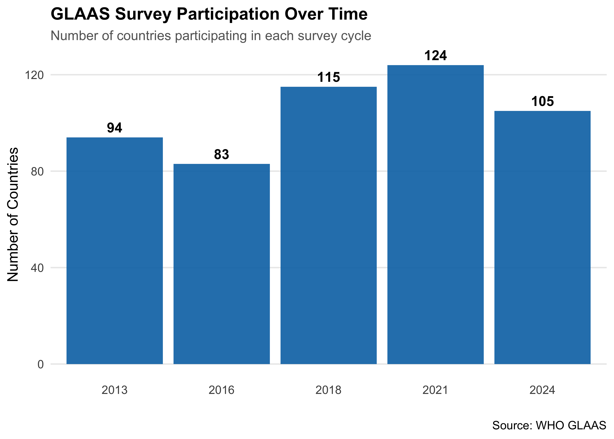
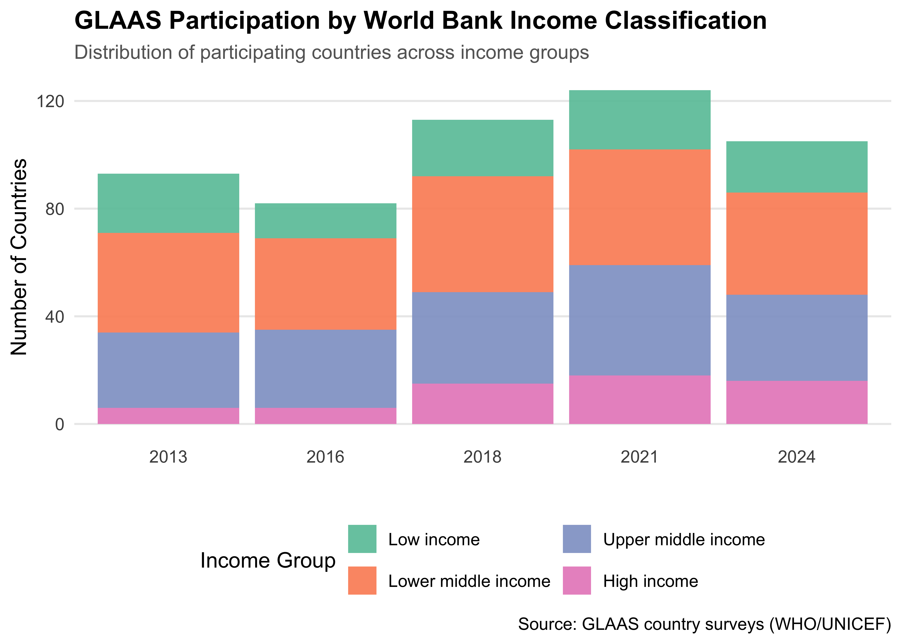
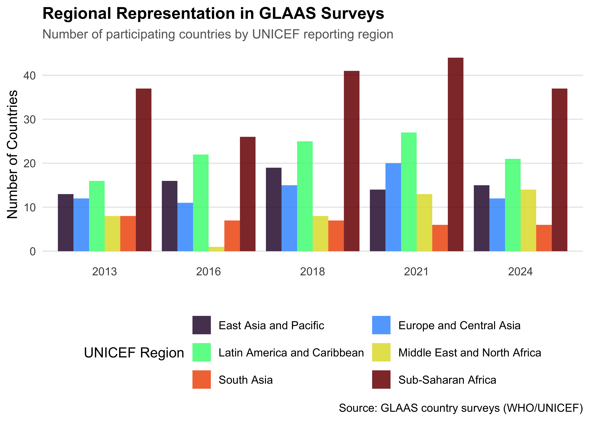
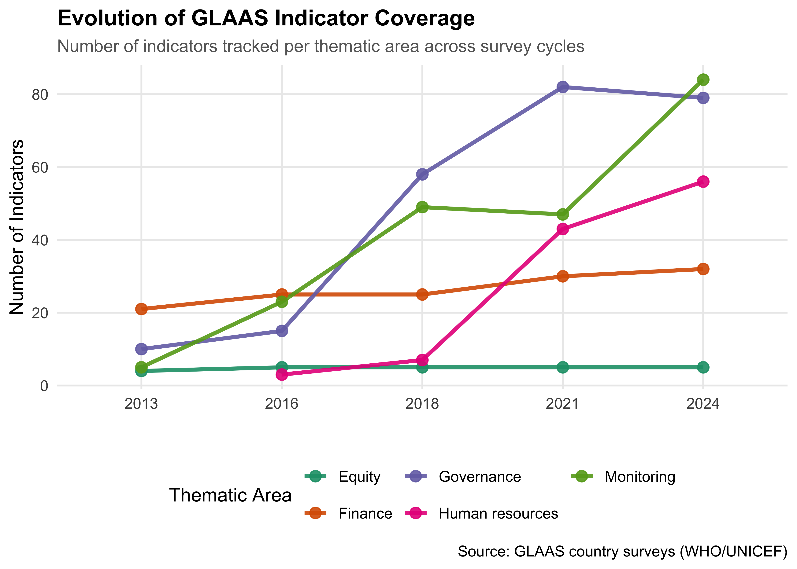

An R data package providing comprehensive access to the UN-Water Global Analysis and Assessment of Sanitation and Drinking-water (GLAAS) dataset. The WHO GLAAS survey collects data on water, sanitation, and hygiene (WASH) systems, policies, and financing from countries worldwide.
While the GLAAS data is available for visualization and download on the official GLAAS portal, this package consolidates the entire dataset in one place, making it easy to perform custom analyses, generate reports, and explore meta-information across survey cycles.
Installation
You can install glaas from GitHub:
# install.packages("devtools")
devtools::install_github("openwashdata/glaas")Note on package size: Due to the large size of the dataset (259,313 rows × 121 variables), this package is not available on CRAN. However, the data uses lazy loading, which means the dataset is only loaded into memory when you actually access it. This keeps the package footprint small until you need the data.
Usage Examples
# Survey participation over time
glaas |>
group_by(time_period) |>
summarise(n_countries = n_distinct(country_name)) |>
ggplot(aes(x = factor(time_period), y = n_countries)) +
geom_col(fill = "#0072B2", alpha = 0.9) +
geom_text(aes(label = n_countries), vjust = -0.5, size = 4, fontface = "bold") +
labs(
title = "GLAAS Survey Participation Over Time",
subtitle = "Number of countries participating in each survey cycle",
x = "",
y = "Number of Countries",
caption = "Source: GLAAS country surveys (WHO/UNICEF)"
) +
theme_minimal(base_size = 12) +
theme(
plot.title = element_text(face = "bold", size = 14),
plot.subtitle = element_text(color = "grey40", size = 11),
panel.grid.major.x = element_blank(),
panel.grid.minor = element_blank()
)
# Participation by World Bank income group
glaas |>
filter(!is.na(region_world_bank_name)) |>
group_by(time_period, region_world_bank_name) |>
summarise(n_countries = n_distinct(country_name), .groups = "drop") |>
mutate(region_world_bank_name = factor(
region_world_bank_name,
levels = c("Low income", "Lower middle income", "Upper middle income", "High income")
)) |>
ggplot(aes(
x = factor(time_period),
y = n_countries,
fill = region_world_bank_name
)) +
geom_col(position = "stack", alpha = 0.9) +
scale_fill_brewer(palette = "Set2", name = "Income Group") +
labs(
title = "GLAAS Participation by World Bank Income Classification",
subtitle = "Distribution of participating countries across income groups",
x = "",
y = "Number of Countries",
caption = "Source: GLAAS country surveys (WHO/UNICEF)"
) +
theme_minimal(base_size = 12) +
theme(
plot.title = element_text(face = "bold", size = 14),
plot.subtitle = element_text(color = "grey40", size = 11),
legend.position = "bottom",
panel.grid.major.x = element_blank(),
panel.grid.minor = element_blank()
) +
guides(fill = guide_legend(nrow = 2))
# Participation by UNICEF region
glaas |>
filter(!is.na(region_unicef_reporting_name)) |>
group_by(time_period, region_unicef_reporting_name) |>
summarise(n_countries = n_distinct(country_name), .groups = "drop") |>
ggplot(aes(
x = factor(time_period),
y = n_countries,
fill = region_unicef_reporting_name
)) +
geom_col(position = "dodge", alpha = 0.85) +
scale_fill_viridis_d(option = "turbo", name = "UNICEF Region") +
labs(
title = "Regional Representation in GLAAS Surveys",
subtitle = "Number of participating countries by UNICEF reporting region",
x = "",
y = "Number of Countries",
caption = "Source: GLAAS country surveys (WHO/UNICEF)"
) +
theme_minimal(base_size = 12) +
theme(
plot.title = element_text(face = "bold", size = 14),
plot.subtitle = element_text(color = "grey40", size = 11),
legend.position = "bottom",
panel.grid.major.x = element_blank(),
panel.grid.minor = element_blank()
) +
guides(fill = guide_legend(nrow = 3, byrow = TRUE))
# Thematic coverage
glaas |>
filter(!is.na(grand_parent_text)) |>
group_by(time_period, grand_parent_text) |>
summarise(n_indicators = n_distinct(indicator_code), .groups = "drop") |>
ggplot(aes(
x = factor(time_period),
y = n_indicators,
group = grand_parent_text,
color = grand_parent_text
)) +
geom_line(linewidth = 1.2, alpha = 0.9) +
geom_point(size = 3, alpha = 0.9) +
scale_color_brewer(palette = "Dark2", name = "Thematic Area") +
labs(
title = "Evolution of GLAAS Indicator Coverage",
subtitle = "Number of indicators tracked per thematic area across survey cycles",
x = "",
y = "Number of Indicators",
caption = "Source: GLAAS country surveys (WHO/UNICEF)"
) +
theme_minimal(base_size = 12) +
theme(
plot.title = element_text(face = "bold", size = 14),
plot.subtitle = element_text(color = "grey40", size = 11),
legend.position = "bottom",
panel.grid.minor = element_blank()
) +
guides(color = guide_legend(nrow = 2))
Contributing
Contributions to improve the package are welcome! Here’s how you can help:
- Report issues: If you find bugs or have suggestions, please open an issue
- Submit pull requests: Fork the repository, make your changes, and submit a PR
- Improve documentation: Help expand examples or clarify variable descriptions
- Add features: Suggest or implement helper functions for common analyses
When contributing, please:
- Follow the existing code style
- Update documentation as needed
- Add examples for new functionality
- Ensure the package builds without errors (
devtools::check())
Citation
If you use this package in your research or publications, please cite it as follows:
Walder C, Massari N (2026).
glaas: Complete data from the Global Analysis and Assessment of Sanitation and Drinking-Water (GLAAS).
R package version 0.0.0.9000, https://github.com/openwashdata/glaas.As this package provides access to the GLAAS dataset, please also cite the underlying data:
License
The package code is licensed under CC BY 4.0. The GLAAS data is provided by the World Health Organization. Please refer to the GLAAS data portal for specific terms of data use.